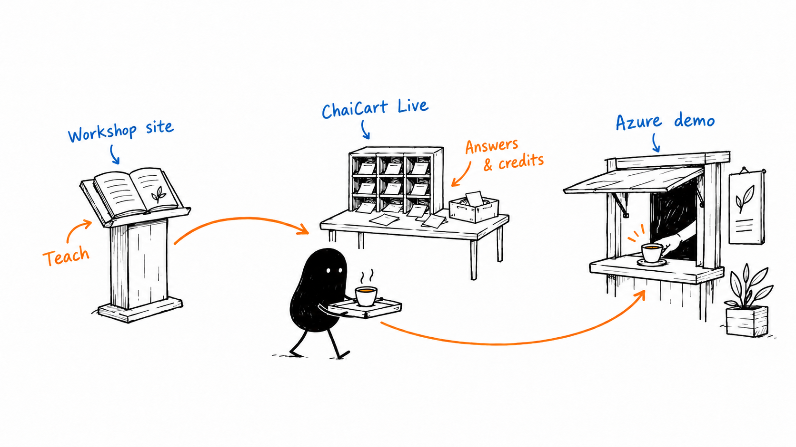
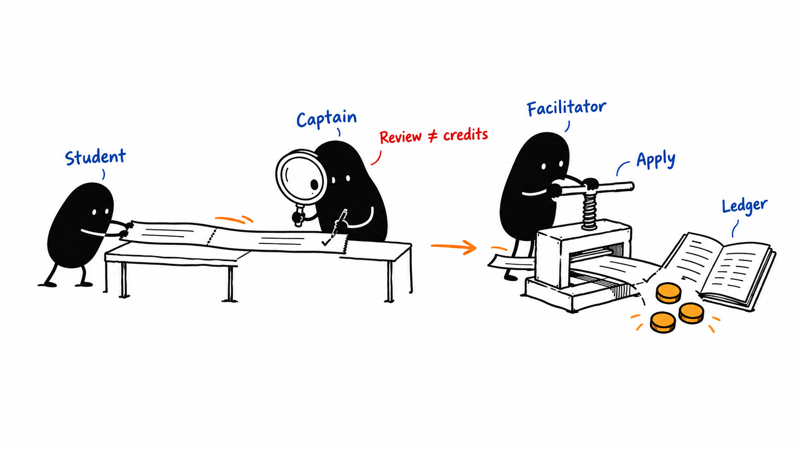
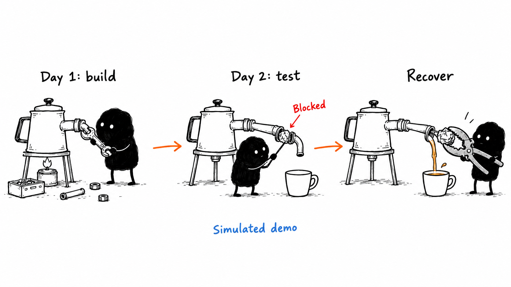

Teach & navigate
Workshop website · GitHub Pages
Slides, facilitator notes, the flow map, this guide and Discord onboarding. It is static HTML/CSS/JavaScript. It does not write official workshop scores.
Repository: chaicart-cloud-workshop.
A project guide for the facilitator
One learning story, three sites. Students build a fictional chai startup on Day 1, then learn how to keep it alive on Day 2. The sites support different parts of that experience.
Remember three rules: teach from the workshop site; collect answers and official credits in Live; demonstrate orders, failures and recovery in Azure. A student architecture is a learning design—it does not automatically provision Azure resources.

Workshop website · GitHub Pages
Slides, facilitator notes, the flow map, this guide and Discord onboarding. It is static HTML/CSS/JavaScript. It does not write official workshop scores.
Repository: chaicart-cloud-workshop.
ChaiCart Live · Firebase Hosting
Google sign-in, team membership, answers, captain reviews, the credit ledger, networking and certificates. React talks to Firebase Auth and Firestore.
Repository: chaicart-live.
ChaiCart Demo · Azure App Service
A storefront and Node.js backend with simulated payment, fulfillment, outages and recovery. Real HTTP requests; simulated business dependencies.
Folder: chaicart-cloud-workshop/chaicart-demo.
Live and the demo use the same Firebase identity project and facilitator admin list. Their student/session data and demo orders are separate. Each site may still ask you to sign in on its own domain.
There are 120 student places: 24 teams of five, arranged into four regions of six teams. Each team starts with 1,000 Cloud Credits.
| Person | Responsibility | What they control |
|---|---|---|
| Facilitator | Runs the room and judges final outcomes. | Creates sessions, assigns captains, launches/locks/reveals activities, applies awards, releases certificates. |
| Regional captain | Supports and reviews six teams in one region. | Shares generated team codes, checks evidence, reviews and awards credits within the assigned region, and shortlists X entries. |
| CEO | Decisions and presentation. | Team pitches and Demo Day; Plan stage in Factory round 2. |
| CTO | Architecture and technology choices. | Leads design discussion; Build stage in Factory round 2. |
| CFO | Cloud cost and credits. | Leads cost decisions and watches the ledger; does not gain staff scoring permissions. |
| SRE | Reliability and recovery. | Leads incident discussion; Test stage in Factory round 2. |
| COO | Time and shared submissions. | Submits scored team answers and votes; Deploy stage in Factory round 2. |
Team roles are not staff access. A CEO is still a student. Captains are assigned staff accounts for a specific session and region. Everyone submits their own polls, surveys, networking completion and personal plan. Assigned station volunteers advance their own station tickets.

Use one scoring path per award. Networking can earn +100 for each completed team activity, at most +300 across LinkedIn, GitHub and X. Cloud or Not earns +100 per correct participant, added to their team. Recap quiz team answers earn +10 when correct. Individual post/photo awards are separate from team credits.
Corrections append compensating ledger entries; they do not erase history. A cached draft or pending write is not a confirmed submission.
Session code: selects the whole workshop session. Team code: admits a student to a particular team. Captains share existing generated codes; they do not create them.
Open permits the activity’s allowed submissions. Locked stops submissions. Revealed exposes the released result. End clears the active activity so phones wait. The projector can show join QR, leaderboard or the current activity.
Use the activity-by-activity flow map for exact timings, buttons, rubrics and handoffs. This is the sequence to remember.
Share Discord onboarding and QR invites with everyone. Prepare Live’s session and captain assignments, open the deck and projector, and test venue Wi-Fi and Google sign-in. Captains distribute team codes. The detailed facilitator guide holds the preparation checklist.
Factory metrics are teaching proxies for DORA; failed tests are not automatically real production incidents. Student design choices affect learning games, not a deployment of their own cloud resources.

POST /api/checkout with a Firebase identity token. The Node backend verifies identity, validates items and quantities, and calculates prices plus delivery.DATA_DIR/state.json. CRM, SCM, HCM, BI and ERP events represent business-system handoffs./api/orders/{id}. Demo delivery advances over 30 seconds; the displayed promise is 10 minutes.These controls live at the Azure app’s facilitator page, not Live’s scoring console. Demo orders never add student credits. The app is a teaching system, not production commerce or independent microservices.
| Location | What it holds | Important boundary |
|---|---|---|
| GitHub Pages files | Slides, notes, QR assets and illustrations. | Static practice quiz/leaderboard pages are reference tools, not the official ledger. |
| Firebase Auth | Google identities used by Live and demo sign-in. | Identity does not automatically grant staff permissions. |
| Firestore | Session state, team reservations, students, submissions, reviews, ledger, leaderboard, designs, tickets and awards. | Rules enforce team/role/region access and protect unreleased answer keys. |
| Browser storage | Cached data, current session and drafts. | Helps with short Wi-Fi interruptions; is not proof that the server accepted a final answer. |
| Azure demo state file | Demo orders and business-system events. | Separate from student scores; file/in-memory design is not a distributed production database. |
admins/{email} authorizes facilitators. sessions/{session}/staff/{email} assigns regional captains. Students and team role slots belong to that session.
submissions holds answers; reviews holds proposals; ledger records official changes; public/leaderboard supplies the current scores. Private application markers prevent duplicate awards. Protected keys and private responses are not public projector data.
Live mostly talks directly to Firestore through the SDK and rules. It does not send workshop answers through the Azure Node server. Firebase Functions provide the protected telemetry gateway, staff scoring actions and recursive session deletion. Azure remains the separate order demo backend.
Students use a verified Google identity and session/team membership. Team answers are COO-controlled; private surveys and plans stay individual. Captains are restricted to their assigned region. Facilitators are on the shared admin allowlist. The Azure server verifies Firebase tokens and facilitator access itself.
Firebase public web configuration belongs in browser configuration. Service-account credentials and telemetry ingestion tokens belong in protected server settings, never in public pages or generated illustrations.
| Change | Repository / source |
|---|---|
| Teaching and run of show | chaicart-cloud-workshop: day1-slides.html, day2-slides.html, facilitator-guide.html, workshop-flow.html. |
| Workshop appearance | assets/deck.css, assets/screen.css, assets/print.css; deck navigation in assets/deck.js. |
| Student activities and text | chaicart-live: src/content/activities.ts, src/content/workshop.ts, src/pages/student/. |
| Joining and roles | src/pages/Join.tsx, src/lib/membership.ts, src/lib/auth.ts, firestore.rules. |
| Staff controls and scoring | src/console/, src/pages/Captain.tsx, src/lib/session.ts, src/lib/credits.ts. |
| Demo storefront or scenarios | chaicart-cloud-workshop/chaicart-demo/public/, server.js, auth.js, telemetry.js. |
Workshop: push the workshop repo to main; GitHub Actions assembles and deploys the static Pages site.
Live: build the React app with production Firebase configuration and deploy Firebase Hosting. Rules and Functions are separate deployment components; update them deliberately when their source changes.
Azure: deploy the demo folder and production dependencies to the existing App Service. Preserve its protected configuration and order storage. The repository’s Azure deploy job is conditional; pushing teaching pages alone is not an Azure release.
Use the repo tests and deployment notes before release. Browser tests with synthetic fixtures demonstrate layout; they do not replace a real-account rehearsal.
Dynatrace RUM covers browser behavior. The Azure Node app exports OpenTelemetry logs, metrics and traces. Live instruments Firebase SDK operations and forwards approved telemetry through its protected Function. This observes the experience; it does not create activity scores.
Logical demo service spans are not proof of separate deployed services. Infrastructure monitoring and alert setup remain distinct. Read the observability runbook for those details.
For the whole room, use the flow map. For exact preparation and judging, use the facilitator guide. This illustrated page explains why the pieces fit together.